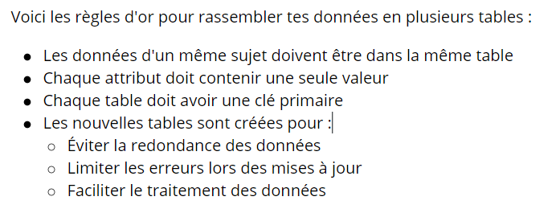

Le modèle relationnel⚓︎
Credits
- Wikipedia
- cours de F. Duchateau, LIRIS, S. Kaci Université Montpellier 2, B. Mermet, Université le Havre,4
- Cours de Frédéric Mandon sous licence Creative Commons BY NC SA
- Cours de Olivier Lecluse (licence by SA 2020)
👉 Une petite video pour commencer sur l'histoire des bases de données :
👉 Une autre vidéo importante pour introduire la notion de base de données :
1. Introduction⚓︎
Le développement des traitements informatiques nécessite la manipulation de données de plus en plus nombreuses. Leur organisation et leur stockage constituent un enjeu essentiel de performance.
Vous avez vu l'an dernier une manière de stocker et manipuler des données structurées à l'aide de différents formats (dictionnaire, CSV). Ces formats basés essentiellement sur du texte sont faciles à mettre en oeuvre et à utiliser mais ne sont pas adaptés au traitement d'un grand nombre d'informations, en particulier lorsque celles-ci se trouvent réparties dans plusieurs tables ou fichiers : Imaginez une compagnie chargée de l'organisation de la circulation des trains sur le territoire national gérant les réservations et l'exploitation des trains avec des fichiers CSV !
Les premières bases de données sont apparues dans les années 1960 et se sont développées en même temps que l'informatique. Dans les années 1980 est apparu le langage SQL spécialement conçu pour faire des requêtes (sélectionner, filtrer, mettre à jour) sur les systèmes de bases de données. Nous aborderons ce nouveau langage particulier dans cette partie.
De nos jours les bases de données sont omniprésentes, en particulier sur le web. La plupart des sites, en particulier dans le commerce en ligne, y font largement appel.
1.1 Gérer efficacement les données⚓︎
Dans une base de données, l'information est stockée dans des fichiers, mais ceux-ci ne sont en général pas lisible par un humain : ils nécessitent l'utilisation d'un système de base de données (SGBD) pour les exploiter. Ceux-ci permettent :
- de lire, écrire, modifier, effacer, mettre en relation des données dans les différentes tables
- de gérer les utilisateurs ayant accès aux données
- de gérer les droits d'accès aux différentes données
- d'assurer la sécurité et l'intégrité des données y compris lorsque plusieurs utilisateurs accèdent simultanément aux mêmes données.
1.2 Les grands logiciels de SGBDR⚓︎
Parmis les logiciels de gestion de bases de données les plus connus, nous avons
Dans le domaine du libre :
 mariaDb / mySQL
postgreSQL
mariaDb / mySQL
postgreSQL
Dans le monde propriétaire, les plus connus sont :
IBM DB2
Oracle Database
Microsoft SQL Server.
Ce sont de très gros logiciels, fonctionnant en mode client/serveur, assez complexes à mettre en oeuvre et à utiliser. Ils sont conçus pour gérer plusieurs millions, voire milliards d'enregistrement de manière fiable et sécurisée. Leur architecture côté serveur est prévue pour êre répartie sur plusieurs machines et ainsi permettre une tenue en charge lorsqu'un grand nombre de requêtes parviennent.
En ce qui nous concerne, nous utiliserons dans la suite un outil libre simple à mettre en oeuvre mais permettant tout de même de se familiariser avec le langage SQL : SQLite.
1.3 Le modèle relationnel⚓︎
Les informations et les données sont collectées depuis longtemps par les états, ou par diverses organisations. Le stockage des données a évolué des fiches papier aux fiches cartonnées, puis aux fichiers informatiques, et enfin aux bases de données.
Comment faire pour construire un bon modèle pour une base de données ?
Modéliser, c’est définir un monde abstrait qui coïncide avec une partie de l’apparence du réel.
Bien modéliser, c’est faire que ce monde abstrait soit structuré, performant, et accessible facilement. Dans ce paragraphe, on va se concentrer sur le niveau logique de la représentation des données : le modèle relationnel.
Bases de données relationnelles
Les bases de données relationnelles ont été mises au point en 1970 par Edgar Franck Codd, informaticien britannique (1923-2003). Ces bases de données sont basées sur la théorie mathématique des ensembles.
Définition
Une base de données est un ensemble structuré d'informations.
- Dans le langage courant, elle peut désigner n'importe quelle source importante d'informations (dictionnaires, encyclopédies, etc.)
- En informatique, il s'agit d'informations stockées sous forme de fichiers et organisées de façon à être facilement manipulées.
1.3.1 Un exemple⚓︎
Un club de sports dispose des données suivantes :
| Prénom | Nom | Sport | Niveau | Adresse | Date dernière compétition | Classement dernière compétition | Code sport |
|---|---|---|---|---|---|---|---|
| Colette | Mavallée | Pétanque | débutant | Montpellier | aucune | 0 | P1 |
| Berthe | Mavallée | Pétanque | national | Montpellier | 01/01/2020 | 1 | P1 |
| Janine | Tutor | Fléchettes | Régional | Saint-Clément | 15/12/2019 | 5 | F2 |
| Amélie | Diodeuor | Aquaponey | Départemental | Saint-Gély | 25/08/2020 | 2 | A2 |
| Hans | Kimkonzern | Fléchettes | Débutant | Saint-Gély | aucune | 0 | F2 |
| Janine | Tutor | Aquaponey | Confirmé | Saint-Clément | 31/05/2020 | 8 | A2 |
1.3.2 Premier modèle : fichier informatique de type tableur (Open Office, Excel, etc.)⚓︎
Dans le modèle relationnel, ces données sont alors modélisées sous la forme de la relation (dite aussi table)
Club = { Prénom String , Nom String , Sport String , Adresse String , DateC Date , Classement Int , Code_Sport String }
On garde les données exactement comme elles sont présentées ci-dessus. Les anomalies suivantes peuvent se produire :
- Redondance lorsqu’un homonyme s’inscrit.
- Modification : si le code sport de Pétanque devient P3 en première ligne, alors il est nécessaire de modifier d’autres lignes
- Suppression : des informations dépendant d’autres informations. Par exemple, supprimer un sport demande aussi de supprimer son code.
- Insertion : insérer un nouvel enregistrement demande la connaissance de toutes les informations qui lui sont liées. Un nouvel inscrit doit immédiatement choisir un sport.
1.3.3 Deuxième modèle : trois relations⚓︎
La base de données est constituée de trois relations Inscrit , Sport , Compétition.
Les schémas de ces relations sont :
Inscrit = { Identifiant_I Int, Prénom String , Nom String , Adresse String }
Sport = { Code_Sport String, Sport String , Horaire String}
Pratiquant = { Identifiant_I Int, Code_Sport String , Niveau String }
Compétition = { Identifiant_I Int, , DateC Date , Code_Sport String , Classement Int }
Les défauts identifiés ci-dessus disparaissent au moins partiellement, et la gestion globale des données est bien plus simple : pas de redondance, des tables plus simples, insertion/modification/suppression plus simples également.
A retenir

1.4 Les contraintes⚓︎
Les contraintes d’intégrité sont des règles permettant de garantir la cohérence des données lors de la mise à jour de la base.
1.4.1 Contraintes d’entité⚓︎
La contrainte d’entité permet de s’assurer que chaque enregistrement de la relation est unique. Comme on l’a vu ci-dessus, la donnée d’un nom et prénom ne suffit pas vu l’existence d’homonymes. Par ailleurs rajouter l’adresse en plus n’est pas une solution pratique, vu que la personne peut déménager. C’est pour cela que l’on rajoute parfois un identifiant unique : numéro de sécurité sociale, numéro de candidat pour le bac.
Remarques :
- L’existence de numéros distincts pour la même personne, suivant les domaines, se justifie pour des raisons sociétales. En effet un unique numéro pour tout permettrait un croisement de fichiers très intrusif pour la vie privée (personne n’a besoin de savoir que M. X, numéro de sécurité sociale xx, a profité de son congé maladie pour exploser son record à Candy Crush où il serait identifié sous le même numéro)
-
Un couple, plus généralement un n-uplet, peut servir d’identifiant unique. Si l’on crée une base de données des élèves de terminale NSI du Lycée Jean Jaurès, le couple (Nom , Prénom) vous identifie bien individuellement.
 Il n'existe qu'un seul identifiant par table mais pouvant porter sur plusieurs attributs.
Il n'existe qu'un seul identifiant par table mais pouvant porter sur plusieurs attributs. -
En théorie, toutes les relations doivent avoir une clé primaire. En pratique, il arrive que certaines n’en aient pas, on crée dans ce cas un index pour rechercher un enregistrement dans la table (recherche dichotomique).
L’attribut ou l’ensemble d’attributs permettant l’identification de l’enregistrement est appelé  clé primaire de la relation, et est noté dans le schéma par soulignement
clé primaire de la relation, et est noté dans le schéma par soulignement
Exemple :
Inscrit = { Identifiant_I Int, Prénom String , Nom String , Adresse String }
Sport = { Code_Sport String, Sport String , Horaire String}
Pratiquant = { Identifiant_I Int, Code_Sport String , Niveau String }
Compétition = { Identifiant_I Int, , DateC Date , Code_Sport String , Classement Int }
1.4.2 Contraintes de référence⚓︎
Les relations Pratiquant et Compétition font référence à des attributs d’autres tables. Lorsqu’on enregistre une nouvelle ligne dans ces tables, on vérifie que les attributs référencés existent : ce sont des clés étrangères. On les note dans le schéma par un # .
Pratiquant = { #Identifiant_I Int, #Code_Sport String , Niveau String }
Compétition = { #Identifiant_I Int, , DateC Date , #Code_Sport String , Classement Int }
Remarque : lors de la création de la base de données, on crée d’abord les tables sans clés étrangères, puis les tables avec clés étrangères. En effet le SGBD vérifie la cohérence au fur et à mesure de la construction.
Remarque 2 : Une clé étrangère désigne TOUJOURS une clé primaire. Les deux attributs doivent être STRICTEMENT du même type de données.
1.4.3 Contraintes de domaine⚓︎
Les contraintes de domaine concernent les attributs. On les a exprimées ici sous forme de type « générique », String, Int ou Date. On dispose d’autres types, Float, Boolean, Time, … qui dépendent en fait du SGB utilisé.
On verra par la suite sur SQL qu’en effet ces contraintes s’expriment légèrement différemment. On peut également préciser qu’une valeur doit être non nulle.
Par exemple lorsque l’on crée un nouvel adhérent, son adresse pourrait ne pas être immédiatement renseignée, mais pas ses nom et prénom.
1.4.4 Contraintes utilisateur⚓︎
Ce sont des contraintes spécifiques qui ne rentrent pas dans les catégories précédentes.
Par exemple, on peut préciser que le niveau est forcément dans la liste (débutant, confirmé, départemental, régional, national, international, intergalactique), qu’un numéro de téléphone portable débute par +33 suivi par un 6 ou un 7, puis est suivi de 8 chiffres, qu’un émail est de la forme : une chaîne de caractères sans @, un seul caractère @, au moins un caractère, un point, et encore au moins un autre caractère.
2. Le langage SQL⚓︎
Au niveau de la terminale retenez les structures des requêtes :
• d’exploration des données, version programme de Terminale NSI
SELECT liste d’attributs (et fonctions d’agrégation)
FROM table
INNER JOIN table ON égalité d’attributs
WHERE condition(s)
ORDER BY attributs de tri (chaque attribut suivi de DESC ou ASC)
Fonction d'agrégation : MIN, MAX, SUM, COUNT, AVG.
• d’un ajout d’enregistrement
INSERT INTO table [liste d’attributs facultative] VALUES liste de valeurs
• de modification d’enregistrement(s)
UPDATE table SET att1 = val1 , att2 = val2,… [WHERE condition]
• de suppression d’un enregistrement
DELETE FROM table WHERE condition
Si vous voulez aller un peu plus loin retenez les structures des requêtes :
• d’exploration des données, version programme de Terminale NSI + compléments :
SELECT liste d’attributs (et fonctions d’agrégation)
FROM table
INNER JOIN table ON égalité d’attributs
WHERE condition(s)
ORDER BY attributs de tri (chaque attribut suivi de DESC ou ASC)
• de création de table
CREATE table (
Attribut1 type de données [contrainte(s)],
…
PRIMARY KEY attribut,
FOREIGN KEY attribut REFERENCES autre_table(attribut)
);
• de suppression de table
DROP table (IF EXISTS)